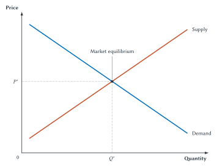
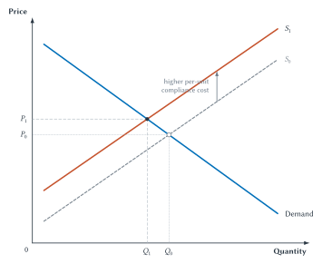
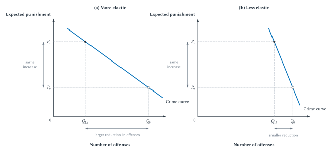
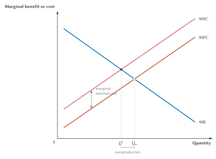
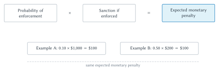

One Rule, Many Adjustments
Suppose a city requires home-repair contractors to use certified parts, complete a safety checklist, and keep records for every installation of a gas appliance. The rule may prevent accidents and make poor workmanship easier to identify. It also takes time and money to follow. Contractors may raise prices, accept fewer small jobs, redesign their work, invest in training, or leave the market. Customers may postpone repairs, attempt the work themselves, hire informal providers, or pay the higher price. Inspectors must decide which records to review and how often to enforce the rule.
Is the requirement worthwhile? That cannot be answered by observing that safety is valuable or that compliance is costly. We need to know how people choose, how markets adjust, which costs fall on third parties, how risk and information affect behavior, and how enforcement changes the expected consequences of violating the rule. We also need a standard for comparing the resulting gains and losses.
This chapter provides a compact toolkit for doing that work. It is not a general microeconomics course in miniature. Every concept appears because it will help us analyze property, accidents, contracts, courts, crime, firms, regulation, platforms, or automated decision makers later in the book.
| Economic tool | Plain-English meaning | Legal use |
|---|---|---|
| Marginal analysis | Compare the effect of one more unit of an action | Ask how a rule changes the next precaution, offense, claim, or unit of output |
| Opportunity cost | Value of the best alternative given up | Identify what enforcement, compliance, delay, or a remedy displaces |
| Supply and demand | Plans of buyers and sellers at different prices | Trace how a legal rule changes price, quantity, entry, and contract terms |
| Elasticity | Magnitude of response to a change | Distinguish a weak deterrent response from a strong one |
| Efficiency and surplus | Total value created relative to resources used | Compare the gains and losses produced by alternative rules |
| Externality | Effect imposed on someone outside the decision | Identify a gap between private incentives and social consequences |
| Expected value | Probability-weighted consequence | Analyze expected punishment, expected harm, litigation, and insurance |
| Strategic behavior | Choices that depend on what others do | Study bargaining, cooperation, enforcement, and reputation |
| Agency | One person acts on another’s behalf | Analyze delegation, monitoring, incentives, and responsibility |
The tools fit together. Choice under scarcity explains why incentives matter. Supply and demand show how many choices interact. Efficiency provides a benchmark for evaluating the result. Externalities and information problems explain why private incentives may diverge from social value. Risk and strategy add uncertainty and interdependence. Agency adds delegation. The chapter ends by asking where the baseline model of purposeful choice needs qualification.
Choice, Rationality, and the Margin
Economic analysis begins with scarcity. People have limited time, money, attention, information, and authority. A court cannot hear every dispute immediately. A police department cannot investigate every suspected offense. A driver cannot eliminate every risk while still traveling. A business cannot devote the same dollar to safety equipment, wages, product development, and legal compliance. Choosing one use means giving up another.
Economists usually begin by assuming that a person tries to make herself as well off as she can, given her goals, options, information, and constraints. This is the rational-choice baseline. It does not require a person to be selfish. Someone may care about family, fairness, reputation, professional duty, or the well-being of strangers. Those concerns can be part of what she is trying to advance. Rationality also does not require perfect information or the ability to solve equations. It means that choices have purposes and that changes in the environment can change which option best advances those purposes.
Consider a driver choosing a speed. Faster travel saves time. It may also use more fuel, raise accident risk, and create a chance of receiving a ticket. The driver need not place every consideration in a spreadsheet. Still, a higher probability of enforcement, a lower speed limit, a more dangerous road, or a larger time pressure can change the choice. The rational-choice model directs us to ask which benefits, costs, beliefs, and constraints moved.
Opportunity Cost
The cost of a choice is not limited to money paid. Its opportunity cost is the value of the best alternative given up. A student who spends three hours studying gives up the best other use of those hours. A city that assigns ten additional officers to traffic enforcement gives up whatever those officers would otherwise have done. A court that devotes a week to a complex commercial dispute cannot use the same week to decide other cases.
Opportunity cost prevents a common error in legal debate: treating a resource as free because no new check is written. Requiring an agency to conduct another review may have no separate line in a statute’s budget, but staff time still has an alternative use. Requiring a business to retain records may consume employee time that could have gone to production, customer service, or another safety practice. The relevant comparison is between realistic alternatives, not between the proposed rule and a world in which its inputs cost nothing.
Why the Margin Matters
Legal rules often influence how much of an activity occurs rather than whether it occurs at all. A driver may slow down without driving at the exact speed limit. A factory may reduce emissions without eliminating them. A creditor may investigate some borrowers more carefully. A potential plaintiff may abandon weak claims while continuing to bring strong ones. These are changes at the margin.
Marginal analysis compares the additional benefit and additional cost of one more unit of an action. Suppose a delivery company can add safety checks one at a time. The first checks may catch obvious hazards at low cost. Later checks may be more expensive and less likely to find a problem. The company should continue adding checks while the benefit of the next check exceeds its cost. In a smooth interior choice, the stopping point is often described as:
The letters
The equality is a guide, not a ritual. Many legal choices are discrete. A business cannot hire 0.37 of an additional security guard, and a court cannot impose 2.4 additional hearings. For discrete choices, the practical rule is to take another unit while its marginal benefit covers its marginal cost, then stop before the next unit would cost more than it adds.
Marginal reasoning also guards against all-or-nothing thinking. The efficient amount of precaution is not necessarily zero or complete safety. The efficient amount of enforcement is not necessarily no enforcement or enforcement of every violation. More precaution and enforcement can be valuable, but each uses resources and can create error, delay, or avoidance. The question is whether the next increment is worth its opportunity cost.
Legal Rules Change the Choice
A legal rule can change a benefit, a cost, a constraint, or the information available to a decision maker. A fine changes the expected cost of an offense. A damage remedy changes the expected cost of causing an injury or breaching a contract. An injunction removes an option unless the right holder consents. A disclosure rule changes what another party knows. A licensing rule changes who may enter a market. A platform reputation score changes the future value of good or bad behavior.
The important word is expected. A nominal consequence that is rarely enforced may have little effect. A modest consequence imposed quickly and predictably may matter a great deal. Chapter 1 introduced legal rules as implicit prices. Marginal analysis now makes that idea operational: identify the action the rule makes more or less attractive, then ask how the next unit of conduct changes.
Purposeful choice gives us a starting point. It does not yet tell us what happens when thousands of people adjust together. For that, we need a compact model of markets.
Markets Adjust to Legal Rules
A market is a process through which buyers and sellers coordinate plans. Demand describes how much buyers are willing to purchase at different prices, holding other relevant conditions fixed. Supply describes how much sellers are willing to provide at different prices, again holding other conditions fixed. Demand usually slopes downward because a higher price causes some buyers to purchase less, switch to alternatives, or leave the market. Supply usually slopes upward because a higher price makes it worthwhile to cover the cost of additional units or attract additional sellers.
The intersection of supply and demand is the market equilibrium. At the equilibrium price, the quantity buyers plan to purchase equals the quantity sellers plan to provide. Equilibrium does not mean that everyone is happy, that the outcome is fair, or that competition is perfect in every actual market. It means that the plans represented by the two curves are mutually consistent at that price and quantity.

Figure 2.1. Market equilibrium. Market equilibrium occurs where quantity demanded equals quantity supplied. Legal rules can change the equilibrium when they alter buyer benefits, seller costs, risks, information, or the terms on which exchange is allowed.
Figure 2.1 is deliberately spare. Its purpose is to establish a baseline that later legal analysis can disturb. A rule may change demand by changing product value, available information, risk, or the terms buyers may accept. It may change supply by changing production cost, expected liability, licensing burdens, or permissible methods. When a rule changes one of those underlying conditions, the relevant curve shifts.
A Legal Rule Shifts Private Cost
Return to the safety and documentation requirement for home-repair services. Suppose compliance raises the cost of providing each covered installation. At every possible quantity, contractors now require a higher price to cover their private cost. The supply curve shifts upward from

Figure 2.2. A legal rule shifts supply. When a legal rule raises per-unit private cost, supply shifts upward. In this benchmark example, equilibrium price rises and equilibrium quantity falls. The graph does not show any safety or other benefit created by the rule.
The graph predicts a direction of adjustment under its assumptions: a higher equilibrium price and lower equilibrium quantity. It does not show that the rule is undesirable. If safer installation prevents losses worth more than the compliance cost, the rule may increase social value even while raising the private cost of service. The graph separates the market response from the later welfare evaluation.
It also separates a movement along a curve from a shift of a curve. A change in the service’s own price, with the underlying conditions unchanged, produces movement along demand or supply. A legal requirement that changes the cost of providing the service shifts supply itself. Confusing the two makes it difficult to trace the rule’s causal path.
Formal and Economic Incidence
The contractor bears the legal duty to complete the checklist. That is the rule’s formal incidence. The graph shows why formal incidence need not equal economic incidence, the ultimate distribution of gains and losses after adjustment. Customers may pay a higher price. Contractors may receive less net income. Some marginal customers may forgo service, and some marginal contractors may leave. The result depends on each side’s alternatives and responsiveness.
A contract rule can generate a similar adjustment. Suppose a law gives customers a nonwaivable repair warranty. The warranty may provide valuable protection. Over time, providers may incorporate its expected cost into price, narrow other service terms, inspect customers’ equipment more carefully, or refuse unusually risky jobs. None of this proves that the warranty fails. It shows why evaluating it requires following the adjustment beyond the party named in the statute.
Elasticity: How Large Is the Response?
Supply and demand often give a directional prediction. Elasticity asks about magnitude. If a small change in price, cost, or expected sanction produces a large change in behavior, the response is relatively elastic. If it produces a small change, the response is relatively inelastic. Inelastic does not mean unresponsive.
Available alternatives matter. A customer can respond more easily when close substitutes exist. A firm can respond more easily when it can change technology, renegotiate contracts, or enter and exit. Time matters because more alternatives often become available over a longer period. Information matters because a person cannot respond to a consequence she does not know or believe will occur.
Elasticity is central to deterrence. The benchmark economic model predicts that increasing expected punishment reduces prohibited conduct. Cooter and Ulen call the downward-sloping relationship between expected punishment and aggregate crime the crime curve, and they call the magnitude of the response the elasticity of the supply of crime. The first claim concerns direction. The second asks how much conduct changes.
To make the horizontal quantity meaningful, imagine repeated embezzlement. Instead of asking how many dollars one person takes in a single act, ask how many times people commit an offense of a given seriousness. The quantity can then be added across potential offenders. This is a clean theoretical interpretation, not a claim about the measured responsiveness of embezzlement or any other particular offense.

Figure 2.3. Elasticity and deterrence. The same increase in expected punishment can produce a large or small reduction in offenses. The more elastic crime curve shows a larger response; the less elastic crime curve shows a smaller response. The panels are theoretical comparisons, not estimates for particular crimes.
The paired panels hold the starting point and punishment change fixed. Both predict fewer offenses. The more elastic panel predicts a larger reduction. Legal design therefore needs more than a slogan that sanctions deter. It needs evidence about responsiveness and about the margins on which people adjust.
Those margins may include more than the number of offenses. An actor might change timing, targets, concealment, methods, or the seriousness of conduct. Planning, addiction, panic, intoxication, mistaken beliefs, social norms, and available lawful alternatives may all affect responsiveness. The figure cannot tell us which real conduct belongs in which panel. That is an empirical question, and the answer may differ across people and settings.
Markets and deterrence show how behavior changes. The next task is to ask whether those changes create or destroy social value.
Efficiency, Surplus, and Distribution
Imagine that one student has an apple she values at $0.60. Another values it at $1.20. If they voluntarily trade at any price between those amounts, both can gain. At a price of $0.90, the seller receives $0.30 more than the apple was worth to her, and the buyer receives an apple worth $0.30 more than he paid. The same physical apple has moved to a higher-valued use, creating $0.60 in total gains from exchange.
The price determines how the gain is divided, but not its total size. At a price of $0.70, more of the gain goes to the buyer. At a price of $1.10, more goes to the seller. The allocation of the apple and the distribution of the gain are different questions.
This is the intuition behind surplus. Consumer surplus is the extra value buyers receive when they pay less than the maximum they would have been willing to pay. Producer surplus is the extra value sellers receive when they sell for more than the minimum they would have accepted, which reflects their opportunity cost. Total surplus adds the two sides’ gains.
Surplus gives concrete content to efficiency. At a principles level, an arrangement is more efficient when it creates more total value from available resources and avoids losses whose prevention would cost less than the loss. In a competitive-market benchmark, exchange continues while buyer value exceeds seller cost. The efficient quantity is reached when producing another unit would cost as much as the value it creates.
If a rule prevents trades for which buyer value exceeds seller cost, some available surplus disappears. Economists call that lost value deadweight loss. The term does not mean that every uncompleted trade is wasteful. A transaction may impose harm on outsiders, depend on deception, or violate a right that cannot be captured by the parties’ private values. Deadweight loss describes value lost relative to the model’s stated benchmark.
The Pie and Its Slices
Efficiency is often described as the size of the economic pie. Distribution concerns how the slices are divided. The image is useful because it prevents two opposite mistakes. One is to assume that a larger pie makes every distribution acceptable. The other is to assume that changing the slices leaves the size of the pie unchanged.
| Question | Efficiency perspective | Distributional perspective |
|---|---|---|
| Apple exchange | Does the apple move to the higher-valued use? | How is the gain divided between buyer and seller? |
| Safety mandate | Do safety benefits exceed compliance and adjustment costs? | Who pays, who receives protection, and who may lose access? |
| Patent protection | Do innovation gains justify restrictions on use and follow-on creation? | Who receives returns, and who bears higher access costs? |
| Enforcement policy | Does added deterrence justify enforcement, error, and punishment costs? | Which communities and individuals bear those costs and receive protection? |
An efficient allocation does not tell us who is entitled to the apple. Theft and voluntary purchase can place the apple in the same hands while differing radically in consent, entitlement, security, and distribution. A stable system of rights may itself contribute to efficiency by discouraging costly taking and protecting investment, but efficiency does not exhaust the reasons to reject theft.
Pareto Improvements and Real Legal Change
A Pareto improvement makes at least one person better off without making anyone worse off. Voluntary exchange under good information is a useful example because each participant can refuse. The concept is attractive precisely because it avoids balancing one person’s loss against another person’s gain.
It is also too demanding to decide many legal controversies. A new pollution rule may benefit nearby residents and harm some producers. A faster court procedure may reduce delay for most litigants while increasing error risk for others. A patent rule may help some inventors and burden some users. In a large society, nearly every important legal change creates both winners and losers.
Economists therefore often ask whether total gains exceed total losses, sometimes called a potential Pareto improvement or cost-benefit approach. The phrase potential matters. Saying that winners could compensate losers is not the same as compensating them. A rule may increase total value while leaving particular people substantially worse off. Distribution, rights, reliance, and legitimacy remain live questions.
Efficiency remains the book’s default economic benchmark because consequences and opportunity costs matter. It is not a presumption that every market outcome is efficient or a moral master key. The next section explains why private choices can fail to maximize social value even when each person is pursuing her own interests intelligently.
When Private Choice and Social Value Diverge
The apple example offers a powerful baseline. When rights are clear, participation is voluntary, relevant effects fall on the parties, and bargaining is cheap, exchange tends to move resources toward people who value them more. No central official needs to know who values the apple most. Offers and acceptances reveal enough information to coordinate the transfer.
The baseline can fail for several reasons. Market power can allow a seller or buyer to restrict exchange and influence price. Public goods can be underprovided when beneficiaries cannot easily be excluded and have reason to free ride. Information problems can block useful exchange or reward low quality. Externalities arise when a decision affects people who are not part of it. Economists use market failure as a compact label for conditions in which decentralized private decisions can diverge from total social value.
Externalities deserve special emphasis because they are one of this book’s recurring organizing ideas. Much of law can be understood as deciding which consequences must enter whose decision. Property rights identify who controls a resource and provide a basis for bargaining. Contracts bring effects within an enforceable agreement. Tort law can place accident costs on parties able to change risks that strangers could not bargain over in advance. Criminal law and regulation address some harms that private claims cannot adequately internalize. Corporate, intellectual-property, platform, and AI rules help determine who bears spillovers from organized and technological activity. Not every legal problem is an externality, and identifying one does not determine the right legal response. But the gap between private and social consequences will reappear throughout the book.
| Source of divergence | Basic problem | Legal question preview |
|---|---|---|
| Externality | A decision imposes costs or benefits on outsiders | Can rights, liability, bargaining, taxes, subsidies, or regulation bring the effect into the decision? |
| Public good | Nonpayers are difficult to exclude and one person’s use may not reduce another’s | Who will finance provision, monitoring, and maintenance? |
| Market power | A participant can restrict quantity or terms | Can competition, entry, regulation, or antitrust improve the outcome? |
| Information problem | One side lacks information needed to evaluate quality, risk, or performance | Can disclosure, warranties, reputation, verification, or liability improve decisions? |
This list diagnoses problems; it does not select remedies. Courts, regulators, legislatures, and private associations also face limited information, strategic behavior, administrative cost, and error. A serious comparison applies the same discipline to the proposed response that it applies to the original problem.
Private Cost and Social Cost
Suppose a business produces a useful service but creates noise or pollution that harms nearby residents. The business considers wages, equipment, materials, and other costs it must pay. Those are part of its private cost. If it does not bear the neighbors’ loss, that loss may not enter its output decision. Social cost includes both private cost and the external cost imposed on others.
At the margin, the relationship is:
The letters

Figure 2.4. Private and social cost. When an activity imposes marginal external cost, marginal social cost exceeds marginal private cost. The market quantity
The private decision occurs where marginal benefit meets marginal private cost, producing
Internalization and Institutional Choice
To internalize an externality is to change the decision so that the actor takes more of the external effect into account. A corrective tax equal to expected marginal external harm is the simplest illustration. If the actor must pay more when the activity imposes more harm, the private cost moves closer to social cost.
Taxation is only one possible institution. Liability can require an injurer to bear legally attributable losses. Regulation can prohibit conduct or require precautions before harm occurs. Property rights can identify who controls a resource and create a basis for bargaining. Subsidies can reward activities that create external benefits. Private agreements, insurance, certification, and association rules can sometimes do similar work.
Each response has information and enforcement requirements. A tax requires an estimate of harm and a way to measure the taxed activity. Liability requires a claimant, proof, causation, a solvent defendant, and a workable remedy. Regulation requires officials to specify or evaluate conduct before they know every local circumstance. Bargaining requires identifiable parties, sufficiently clear rights, and manageable transaction costs.
The next chapters develop those institutional comparisons. For now, the essential lesson is modest: private and social value can diverge, and the diagnosis must be followed by a comparison of imperfect remedies.
Risk, Expected Punishment, and Information
Many legally important decisions occur before anyone knows what will happen. A driver chooses precaution before an accident. A lender advances money before repayment. A business performs or breaches before a court determines damages. A city chooses enforcement before it knows which violations will be detected. A person buys insurance before learning whether a loss will occur.
Risk describes uncertain outcomes that can be assigned probabilities, even if the estimates are rough. Uncertainty is broader and includes situations in which the possibilities or probabilities themselves are difficult to know. Expected value gives us a disciplined starting point for thinking about either problem, but it does not capture everything people care about.
Expected Value in Words and Symbols
Expected value combines each possible consequence with the probability that it occurs. For the simple expected penalty used throughout this book:
Suppose a parking violation carries a $1,000 fine but only a 10 percent probability of punishment. The expected monetary penalty is:
$$ E(P) = 0.10 \times $1{,}000 = $100 $$
A different policy might impose a $200 fine with a 50 percent probability:
$$ E(P) = 0.50 \times $200 = $100 $$
Both calculations equal $100. The arithmetic does not establish that the policies are behaviorally, legally, or morally equivalent.

Figure 2.5. Expected penalty. Expected monetary penalty combines enforcement probability and sanction severity. Different combinations can produce the same expected amount without being equivalent legal policies.
The same logic applies to expected harm:
Suppose a precaution costing $30 reduces the probability of a $10,000 loss from 1 percent to 0.5 percent. Before the precaution,
The calculation leaves out facts that may matter. The loss may include pain, fear, or rights that are difficult to express in money. The probability estimate may be poor. The precaution may shift risk to someone else. A court may be unable to observe whether the precaution was taken. The formula organizes the comparison; it does not eliminate judgment.
Why Equal Expected Values Can Feel Different
Many people prefer a certain outcome to a risky outcome with the same expected monetary value. This is risk aversion. A student may prefer paying a certain insurance premium to facing a small chance of a loss she could not afford. Wealth matters because a $10,000 loss can be inconvenient for one person and catastrophic for another. Timing matters because a sanction imposed years later may influence behavior less than an immediate consequence. Beliefs matter because an announced probability has little effect if people do not know or trust it.
These considerations complicate the expected-penalty examples. A rare $1,000 fine may be ignored, misunderstood, or viewed as arbitrary. A frequent $200 fine may be more salient and predictable. The higher sanction may also create a stronger incentive to evade detection, contest the charge, or avoid an activity entirely. Enforcement probability can be expensive to increase, while extreme sanctions may create serious error, proportionality, and legitimacy costs.
Insurance, Moral Hazard, and Adverse Selection
Insurance transfers and pools risk. A student who buys renters’ insurance gives up a certain premium in exchange for protection against a larger uncertain loss. The arrangement can make both insurer and insured better off when the insurer can pool many risks and the student values stability.
Insurance also changes incentives. Moral hazard arises when protection against a loss changes behavior in a way that increases the probability or size of the loss. A fully insured driver may have less reason to avoid a poorly lit parking area, and a firm protected from some liability may take less precaution. Deductibles, coinsurance, monitoring, exclusions, experience-rated premiums, and cancellation can restore some incentive to prevent loss.
Moral hazard is not an accusation of bad character. It describes a change in incentives after protection is provided. Nor does it prove that insurance is undesirable. Risk sharing can be valuable even when it requires additional monitoring or cost sharing.
Adverse selection arises before an agreement when one side knows more about risk or quality than the other. If people know more about their own risk than an insurer does, high-risk customers may be especially eager to buy at a premium based on average risk. Safer customers may find that premium unattractive and leave. The remaining pool becomes riskier, which can push the premium higher and drive out more relatively safe customers.
The same structure appears outside insurance. A landlord may know more than a tenant about hidden defects. A borrower may know more than a lender about repayment prospects. A seller may know more than a platform buyer about product quality. Disclosure rules, inspections, warranties, reputation systems, screening, and liability can reduce some information gaps, but each has cost and can be manipulated.
Information therefore links risk to institutional design. A rule works only through what people know, believe, can verify, and can prove. That is why legal analysis cannot stop with the nominal sanction or formal entitlement.
Strategy, Delegation, and Limits of the Baseline
Some decisions can be analyzed as if other people were part of the background. Strategic settings are different. One person’s best choice depends on what another person chooses, expects, or believes. Bargaining, litigation, contract performance, pollution control, platform moderation, and enforcement all contain this interdependence.
Game theory begins by identifying the players, the strategies available to each, and the payoff produced by every combination of strategies. The goal here is not to solve complicated games. It is to recognize when a legal rule changes the game rather than merely changing one person’s isolated choice.
A One-Shot Cooperation Problem
Suppose two neighboring firms can each install a low-cost pollution control or decline to do so. Each benefits when the other firm controls pollution. Each also prefers to avoid its own control cost. The illustrative payoff table below lists the row firm’s payoff first and the column firm’s payoff second.
| Column cooperates | Column defects | |
|---|---|---|
| Row cooperates | (3, 3) |
(0, 5) |
| Row defects | (5, 0) |
(1, 1) |
Table 2.1. A prisoner’s dilemma. Each firm receives its highest individual payoff by defecting while the other cooperates. Yet when both follow the individually attractive strategy, each receives less than it would under mutual cooperation.
Read the table one row at a time. If both cooperate, each receives 3. If the row firm cooperates and the column firm defects, the ordered payoff is (0, 5): 0 for Row and 5 for Column. If Row defects while Column cooperates, the payoff is (5, 0). If both defect, each receives 1.
Defection is a dominant strategy in this stylized one-shot game. It gives each firm a higher payoff regardless of what the other does. The resulting outcome, (1, 1), is stable because neither firm can improve by changing alone while the other continues to defect. Yet both firms would prefer mutual cooperation at (3, 3). Individually attractive choices have produced a jointly inferior result.
This does not mean that every pollution problem or legal conflict is a prisoner’s dilemma. Payoffs, information, enforcement, communication, and exit options determine the strategic structure. The table is useful because it identifies one reason private choice may fail: each participant bears the cost of cooperating while sharing the benefit with others.
Law can change the game. A tax or liability rule can lower the payoff from defecting. An enforceable agreement can make cooperation credible. A regulator can monitor performance. A property right can identify who has authority to permit or prevent the conduct. A platform can condition continued access on compliance. The economic task is to ask how the rule changes strategies and payoffs, including opportunities for evasion.
Repetition, Reputation, and Cooperation
The one-shot table omits the future. When parties expect to interact again, today’s opportunism can provoke tomorrow’s refusal to trade, loss of reputation, stricter monitoring, or retaliation. Cooperation may become worthwhile because a short-term gain threatens a valuable relationship.
Repeated interaction helps explain why merchants, neighbors, employers, contractors, and platform participants sometimes cooperate without invoking formal law after every disagreement. Norms and reputation can reduce enforcement costs. Their effectiveness depends on whether behavior is observable, memories are reasonably accurate, future dealings matter, and participants can identify or exclude defectors.
The mechanism can weaken when the relationship is about to end. A business expecting bankruptcy may care less about future reputation. A seller who can cheaply create a new online identity may escape feedback. A party to a one-time transaction may value the immediate gain more than any future consequence. Formal law, bonding, escrow, verification, or platform identity rules may then become more important.
Delegation and Agency Costs
Legal and economic systems depend on delegation. Shareholders rely on managers. Clients rely on lawyers. Landlords rely on property managers. Consumers rely on platforms to process payments and resolve disputes. A user may authorize software or an AI agent to search, negotiate, schedule, purchase, or communicate.
Delegation creates gains because an agent may possess time, expertise, scale, or information the principal lacks. It also creates a principal-agent problem when the agent’s objectives differ from the principal’s or when the principal cannot observe the agent’s action. The resulting losses and the resources spent preventing them are agency costs.
Consider shareholders who delegate day-to-day control to a manager. The manager may have better information and the ability to coordinate employees. She may also prefer greater compensation, less effort, more prestige, or a safer strategy than shareholders would choose. Monitoring can reduce the divergence, but monitoring itself costs money and can discourage useful discretion.
| Delegation setting | Potential gain | Agency risk | Possible control |
|---|---|---|---|
| Shareholder and manager | Specialized management | Effort or strategy diverges from investor goals | Board oversight, disclosure, incentives, voting, exit |
| Client and lawyer | Legal expertise and representation | Lawyer’s time or settlement incentives differ from client’s | Fee design, communication duties, review, reputation |
| Platform and seller | Payment, matching, and reputation infrastructure | Platform rules favor its own objectives or are applied inaccurately | Appeals, disclosure, competition, contractual or public oversight |
| User and AI agent | Speed, search, and delegated execution | Agent misunderstands instructions or pursues an imperfect proxy | Limits on authority, logs, confirmation, monitoring, liability rules |
No control eliminates agency costs. Tight instructions can prevent misuse but also block adaptation. Performance pay can align one measured objective while distorting unmeasured ones. Monitoring improves information but consumes resources and may invade privacy. Later chapters will compare these controls in corporations, platforms, and autonomous systems.
Behavioral Qualifications
The chapter began with purposeful choice under constraints. Behavioral economics asks whether the assumptions used in that baseline predict actual behavior well enough for the legal problem at hand. People may have limited attention, misunderstand probabilities, react differently to equivalent choices depending on framing, place unusual weight on immediate consequences, or care about fairness in ways a narrow monetary model misses.
These are not reasons to declare behavior random. Predictable mistakes and social preferences can themselves produce testable hypotheses. A disclosure rule may fail if people do not notice it. A distant sanction may have little effect on someone focused on an immediate reward. A default rule may influence choices because changing it requires attention and effort. A procedurally respectful decision may receive more cooperation than a decision viewed as arbitrary, even when the material payoff is the same.
The right response is not to discard the economic toolkit. It is to use the simplest model that predicts well enough, then revise it when evidence or institutional detail shows a systematic failure. Rational choice remains a useful baseline because it forces us to specify options, incentives, information, and constraints. Behavioral analysis improves the baseline by asking how real decision makers perceive and process them.
Big Picture
Legal rules operate inside systems of choice. They change costs, benefits, rights, information, constraints, and expected consequences. Marginal analysis asks how those changes affect the next unit of behavior. Supply and demand show how many individual adjustments interact and how formal legal burdens can move through prices, quantities, entry, and contract terms. Elasticity asks whether the response is large or small.
Efficiency and surplus provide a default language for asking whether an arrangement creates value or wastes resources. Distribution asks who receives the gains and bears the losses. Externalities, public goods, market power, and information problems explain why private choice may diverge from social value, while institutional comparison reminds us that remedies also have costs and failure modes.
Risk introduces probability, expected harm, insurance, moral hazard, and adverse selection. Strategy introduces interdependent choice, cooperation, and reputation. Agency introduces delegation and monitoring. Behavioral economics qualifies the starting assumptions without making incentives irrelevant.
These tools will recur throughout the book. Chapter 3 turns from the toolkit to the legal institutions that create, interpret, and enforce rules. Chapter 4 adds transaction costs and bargaining. Later chapters apply the same logic to property, intellectual property, torts, contracts, courts, crime, corporations, regulation, antitrust, platforms, smart contracts, and AI agents. The domains change. The recurring questions remain: Who chooses? What do they know? What changes at the margin? Who bears the consequences? Which institution can improve the result at reasonable cost?
Chapter Study Map
- Core ideas: purposeful choice under constraints, opportunity cost, marginal benefit and cost, market adjustment, elasticity, surplus, efficiency and distribution, externalities, expected value, information, strategic interaction, agency, and behavioral qualifications.
- Figures: explain how Figure 2.1 determines market equilibrium, Figure 2.2 traces a legal cost through supply, Figure 2.3 separates the direction and magnitude of deterrence, Figure 2.4 distinguishes private from social cost, and Figure 2.5 combines enforcement probability and sanction severity.
- Reasoning tasks: identify the margin changed by a rule, distinguish a movement along a curve from a shift, separate formal from economic incidence, compare private and social effects, calculate simple expected values, and identify strategic or agency problems.
- Common mistakes: treating rational choice as selfish perfection, assuming the announced sanction equals the expected sanction, treating inelastic behavior as unresponsive, equating legal and economic incidence, using efficiency as a complete moral standard, or assuming that identifying an externality identifies its remedy.
- Practice tools: use the review questions to check concepts, the economic reasoning questions to analyze unfamiliar rules, and the Incentive-Design Stress Test to challenge an institutional proposal with AI-assisted counterarguments.
- Optional enrichment: repeated-game theory can be developed more formally, and the full corporate chapter will add richer models of agency and governance.
Review Questions
- What does rational choice mean in this chapter, and what does it not require?
- Define opportunity cost and give a legal or enforcement example.
- What is marginal analysis? How does the rule differ for smooth and discrete choices?
- Explain the expression
in ordinary language. - What does market equilibrium represent in Figure 2.1?
- Distinguish movement along a curve from a shift of the curve.
- Why can the formal incidence of a legal rule differ from its economic incidence?
- What does elasticity add to a directional prediction about behavior?
- Explain the difference between the First Law of Deterrence and the elasticity of the supply of crime.
- Define consumer surplus, producer surplus, total surplus, and deadweight loss verbally.
- Why are efficiency and distribution distinct questions?
- Why is the Pareto criterion too demanding for many legal changes?
- What is an externality, and what does it mean to internalize one?
- Explain why Figure 2.4 does not imply that the efficient quantity of a harmful activity is zero.
- Read
as an English sentence and define every symbol. - Why can two policies with equal expected monetary penalties produce different behavior and welfare?
- Distinguish moral hazard from adverse selection.
- What makes a decision strategic rather than merely individual?
- Why does the prisoner’s-dilemma table produce mutual defection even though both players prefer mutual cooperation?
- How can repeated interaction support cooperation?
- What creates a principal-agent problem?
- How does behavioral economics qualify rather than destroy the rational-choice baseline?
Economic Reasoning Questions
- A city raises the fine for illegal parking from $50 to $200 but cuts enforcement so that the probability of a ticket falls from 40 percent to 10 percent. Calculate the expected monetary penalty before and after. Identify at least three reasons behavior might still change.
- A state requires online sellers to provide a one-year warranty. Explain how the rule might shift supply, change price or entry, reduce an information problem, and alter product quality. What evidence would be needed to evaluate it?
- A university adds another layer of review before suspending a student organization. Identify the marginal benefit, marginal cost, opportunity cost, and possible error costs of the additional review.
- A licensing rule raises the cost of entering a home-repair market. Use supply and demand to predict the benchmark effect on price and quantity. Then identify one possible benefit missing from that graph.
- Two enforcement strategies have the same expected monetary penalty. One uses frequent small fines; the other uses rare severe fines. Compare salience, risk, wealth constraints, error, enforcement cost, evasion, proportionality, and marginal deterrence.
- A factory’s production benefits customers and owners but creates noise for nearby residents. Use Figure 2.4 to explain why private output may exceed efficient output. Compare a tax, damages, regulation, and bargaining without assuming one is automatically best.
- A platform publishes a reputation score for service providers. Explain how the score might reduce adverse selection, create incentives for quality, invite strategic manipulation, and generate agency concerns if the scoring process is inaccurate.
- Two firms repeatedly use the same shared shipping facility. Each can pay for maintenance or free ride. Explain how the one-shot incentives differ from a repeated relationship and identify a legal or private rule that could support cooperation.
- Shareholders reward a manager entirely for quarterly revenue. Use principal-agent reasoning to identify the desired behavior, at least two distorted margins, and two alternative governance mechanisms.
- A city offers a subsidy for installing home insulation because reduced energy use benefits the electrical grid and lowers pollution. Identify the external benefit, explain internalization, and describe one information or administrative problem with the subsidy.
Law and Economics Lab
Incentive-Design Stress Test
Choose a legal or private-governance problem for which at least two realistic rules are available. Good candidates include parking enforcement, a rental safety requirement, a university attendance rule, an online marketplace warranty, a platform moderation policy, a contractor licensing requirement, or a workplace monitoring rule.
- State the behavioral objective and identify the people whose choices matter.
- Describe two alternative rules accurately. If the rules are real, cite the current primary source. If they are hypothetical, label them clearly.
- For each rule, identify the expected cost or benefit it changes and the principal margin of adjustment.
- Where possible, construct one simple expected-value example. Define every symbol and explain what the calculation omits.
- Predict at least three responses beyond simple compliance, such as substitution, concealment, price changes, quality changes, entry, exit, monitoring, appeal, or renegotiation.
- Identify effects on outsiders, information problems, strategic behavior, and any principal-agent relationship.
- Compare the rules using efficiency, distribution, enforcement cost, error, rights, and legitimacy. Do not announce a winner until the comparison is complete.
- Ask an AI system to challenge your analysis. Require it to identify a missing actor, an omitted margin, an assumption that may fail, and a plausible counterexample. Do not ask for a summary.
- Verify every factual claim the AI adds. Separate verified facts from hypotheses and value judgments.
- Revise your recommendation. Explain which AI challenge changed your analysis, which challenge you rejected, and why.
Submit a three-page analysis, a one-page comparison table, and a short prompt appendix. The appendix should contain your most useful prompt, the strongest counterargument generated, the verification source for any factual claim retained, and one AI suggestion you rejected because it was unsupported or economically confused.